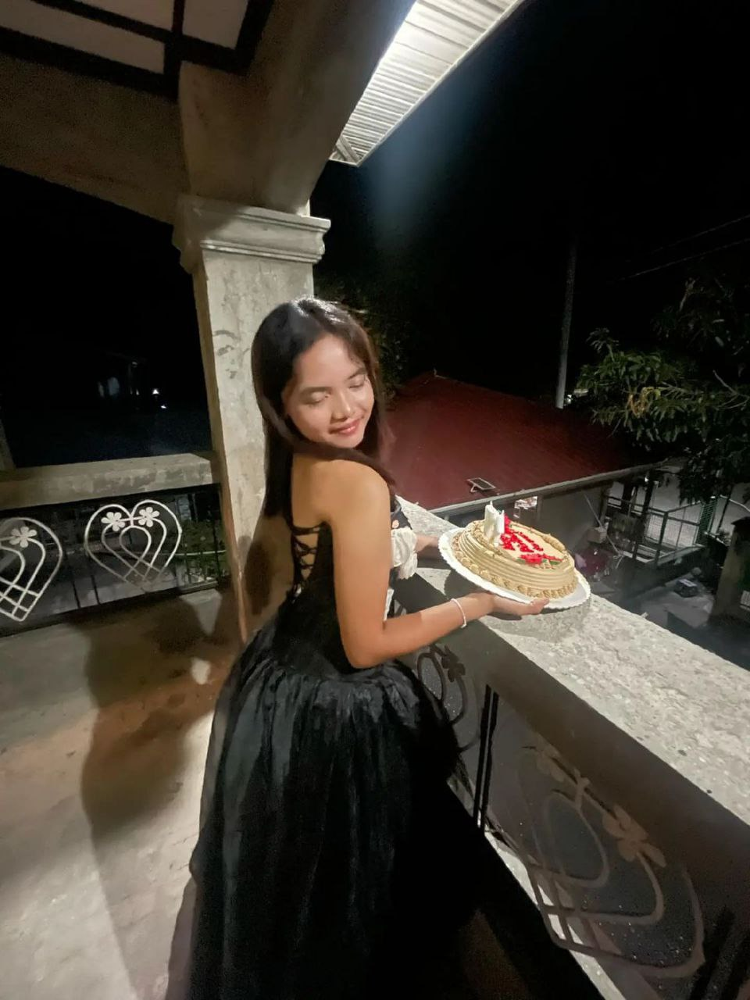

BS Information Technology — 1-C
Full Name: Cristine Canonizado Delo
Nickname: Tin / Kikay
Age: 18
Address: Barangay Lennec, Purok 7, Sitio San Felipe, Guimba, Nueva Ecija
Hi there! I'm Cristine. I'm a first-year BSIT student at Our Lady of the Sacred Heart College. I'm still new in this course, but I'm really willing to learn and do my best. I like discovering how things work on computers. I believe that if I work hard and never give up, I can reach my goals. I want to make my family proud and help others someday.
COLLEGE
Our Lady of the Sacred Heart College, Inc.
Bachelor of Science in Information Technology
2026 — Present
SENIOR HIGH SCHOOL
Pacac Senior High School
ABM — Accountancy, Business, and Management Strand
2024 — 2025
JUNIOR HIGH SCHOOL
Pacac Junior High School
2020 — 2024
Technical Skills
Personal Skills
"My dream is to become a successful IT professional. I know it won't be easy, but I will keep trying my best. I want to finish my studies, give back to my parents, and have a job that I can be proud of. I may be starting small right now, but I believe that with hard work and faith, my dreams will come true someday."
— Cristine ✿
📞 Contact Number: 0965-550-3388
✉️ Email: cathqt2627@gmail.com
📘 Facebook: Cristine Delo
📸 Instagram: @cathsxddd
💻 GitHub: cristine1226
Program Name: Shape Guessing Game
Description: A simple game where you guess the shape based on riddles. You have 3 tries for each question.